The trip started at Tweed Heads, where Dan and I stopped to photograph the structure marking the Queensland and New South Wales border. We headed south from there along the coast, with beach stops, headlands and small roadside pauses before the road eventually turned north again.
Dan travelled with me until Thursday afternoon. After he left, it became the solo car-sleeping part of the trip: just me, the coast and the practical question of where to stop before dark.
Fingal Head, Kingscliff, Hastings Point and Brunswick Heads came first. Hastings Point was good. At Fingal Head, dark basalt and surf stand out in the photographs; the columns on the headland are the result of cooling lava flows, according to Tweed Regional Museum.1
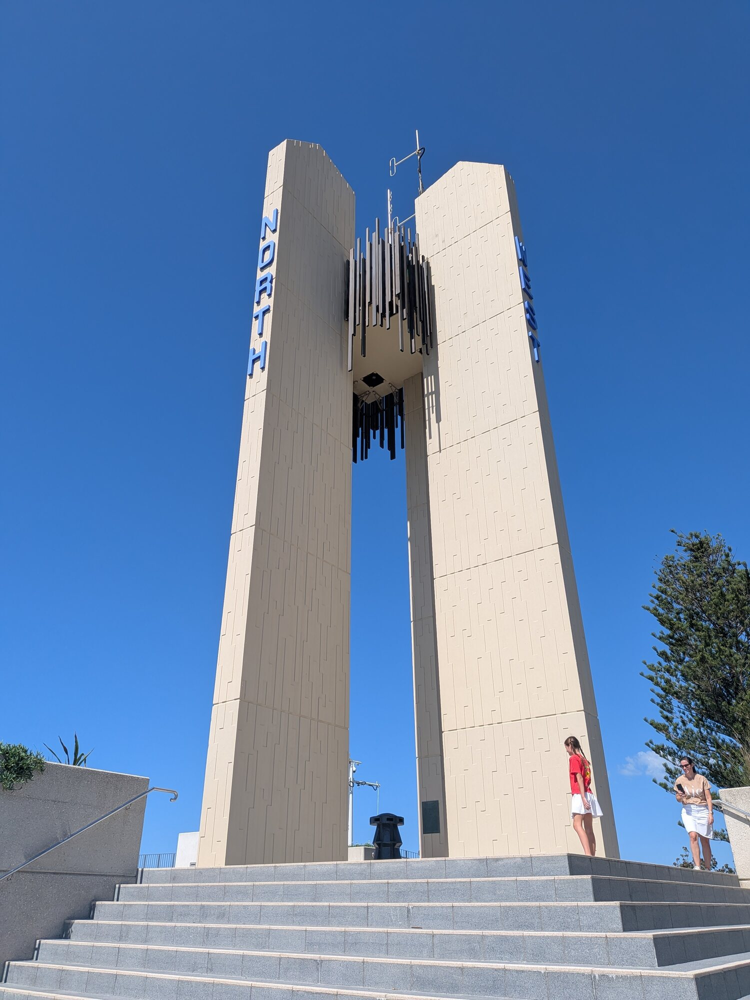
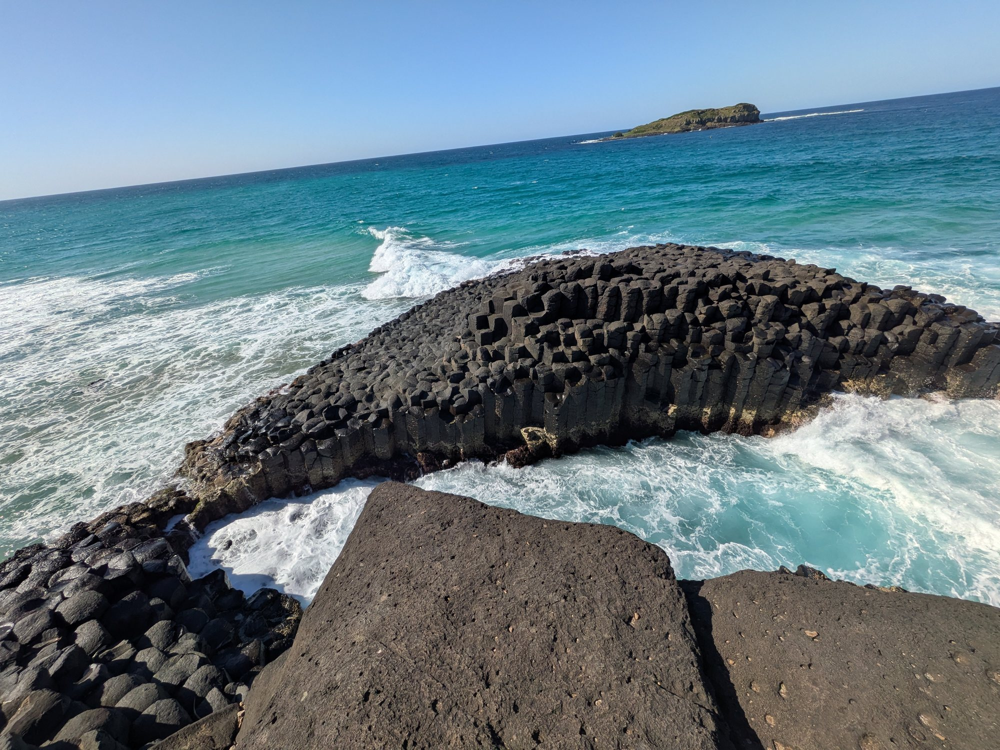
The northern beaches
Fingal Head, then the open coast
Fingal Head is not just another beach stop. The photographs show dark rock shelves, blue-green water and the columns on the headland. Dan and I also watched dolphins moving through the water, surfing the waves and flipping clear of them. From there the coast continues through Wooyung, a photographed stretch of broad sand, while Kingscliff and Brunswick Heads remain earlier stops on the route.
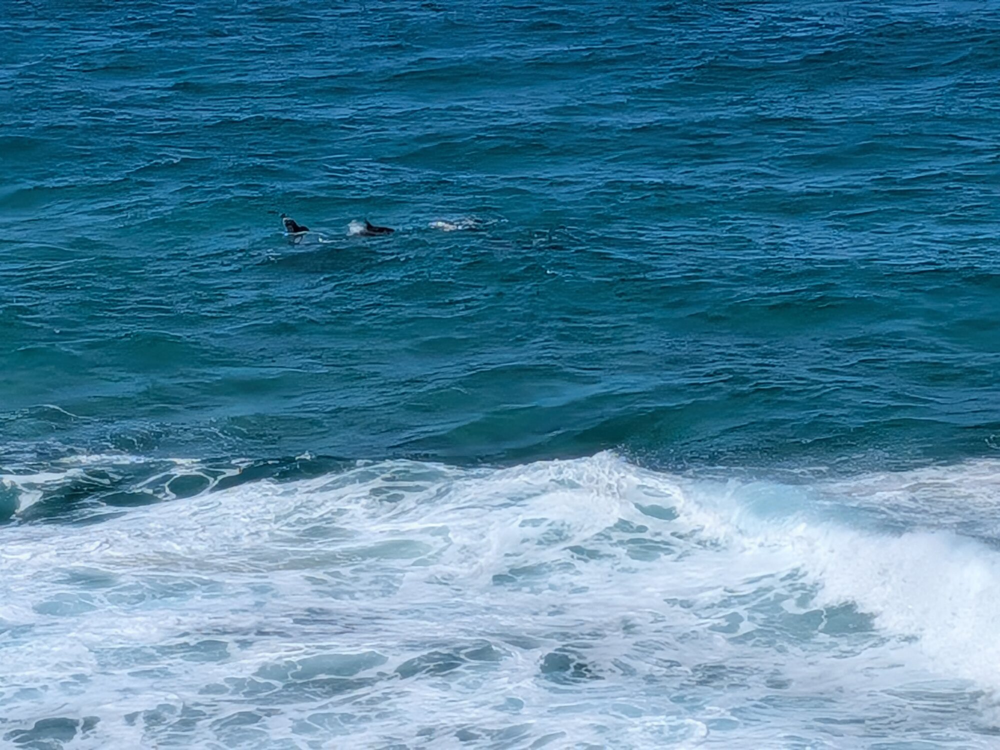
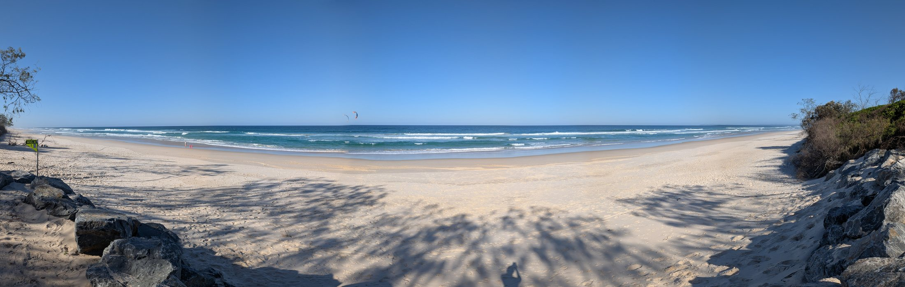
A roadside detour
The market/junkyard
Somewhere around the early stops, Dan and I ended up at a strange Mad Max-style weekend market/junkyard. It was full of improvised rooms, signs and old things with a second life. Dan petted a tiny dog while I tried to explain that the trip was partly about finding myself. The first thing one man asked me was, “Do I need some acid?” That was the tone of the place.
The photos include toilet seats painted and written on with jokes and messages. I have left the writing to speak for itself rather than trying to transcribe it.
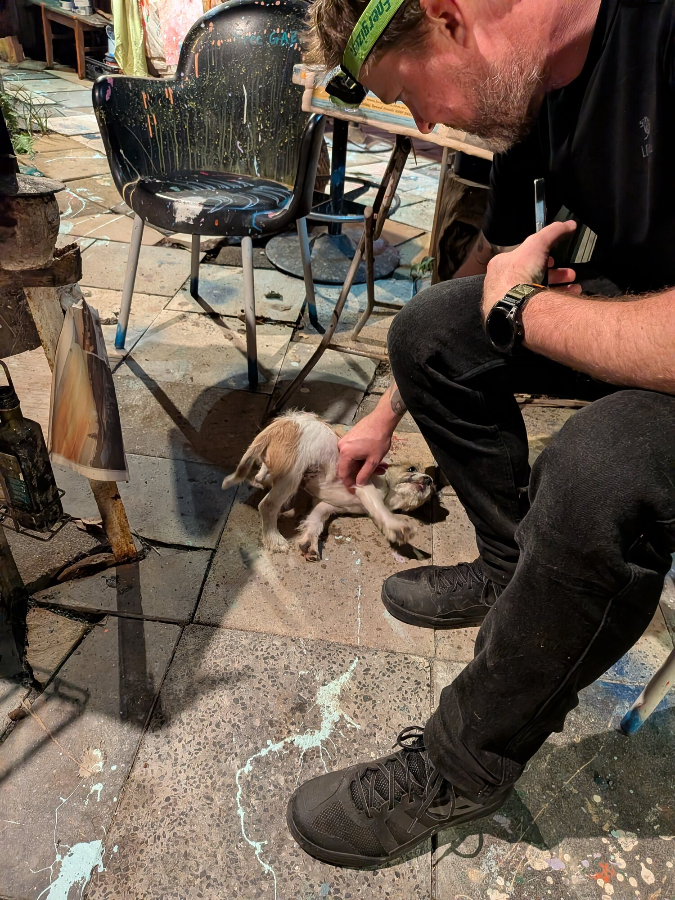
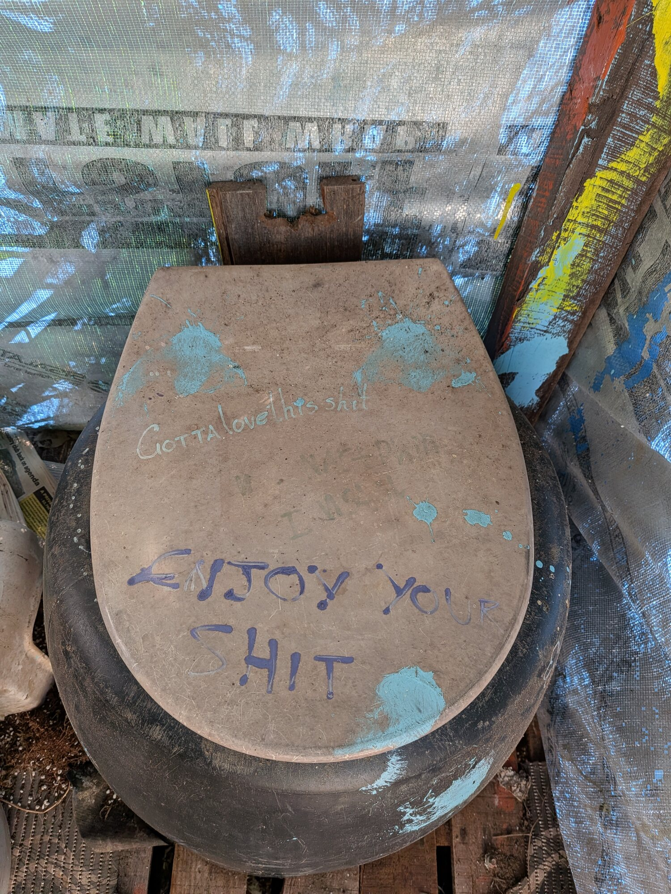
Byron to the Richmond
A quick Byron, then places with more room
Byron Bay, briefly
I passed through Byron Bay twice, once heading south and once on the way back to Brisbane. Both times I went to the beach, which was nice, but I did not explore much else. The town felt too touristy for me, and on one visit I was there for about half an hour. Broken Head was pretty good. Lennox Head was pretty good too. Broadwater followed as a photographed coastal pause before Evans Head.
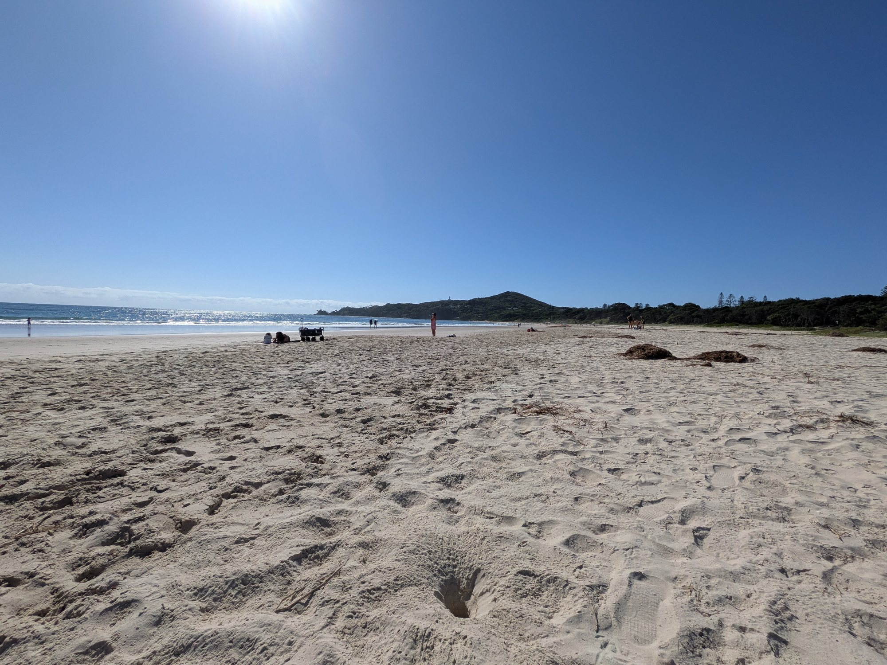
Evans Head
Evans Head was really nice. The photographs look out across a long stretch of coastline from an elevated lookout. It followed Lennox Head and Broadwater on the southbound run.
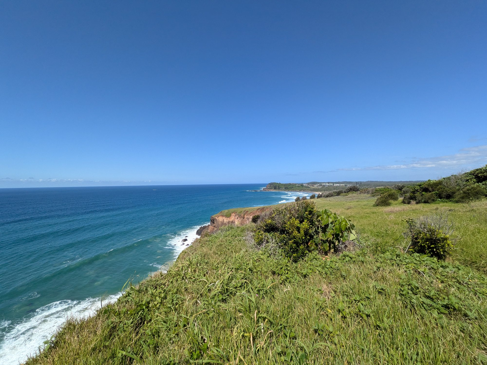
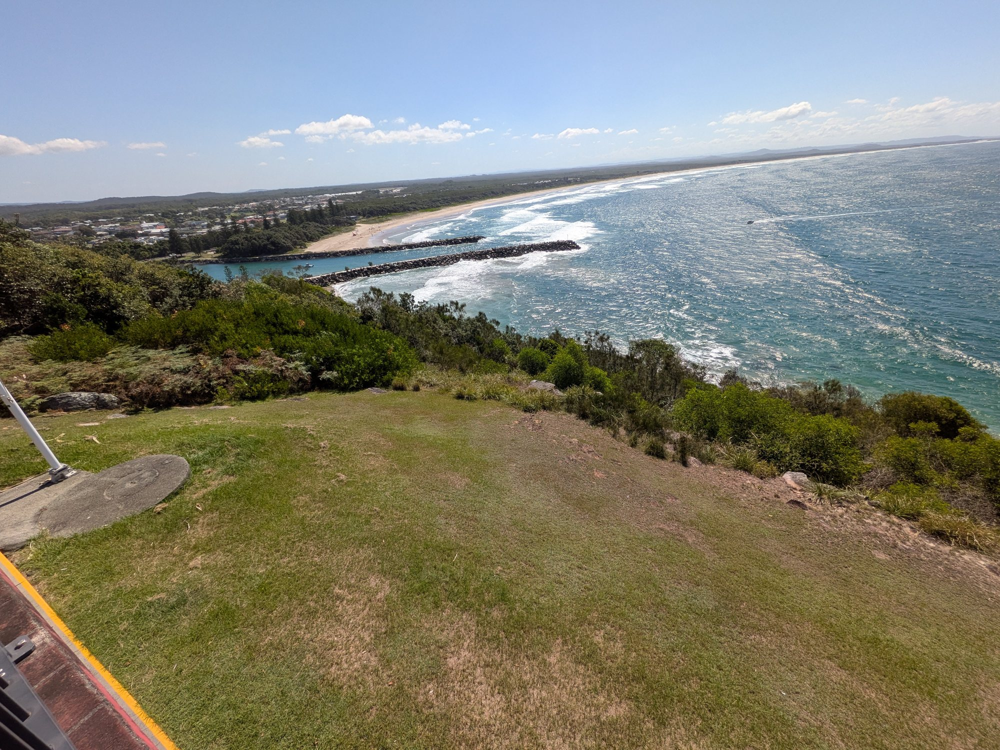
On the road
Sleeping in the car
This was a solo trip with nights spent in the car. An overnight stop needs a practical decision before dark: use a booked or clearly permitted option, read the signs on site and do not assume a quiet car park allows an overnight stay.
That planning shapes the day as much as the distance between stops. It leaves time for the coast without relying on an improvised place to sleep.
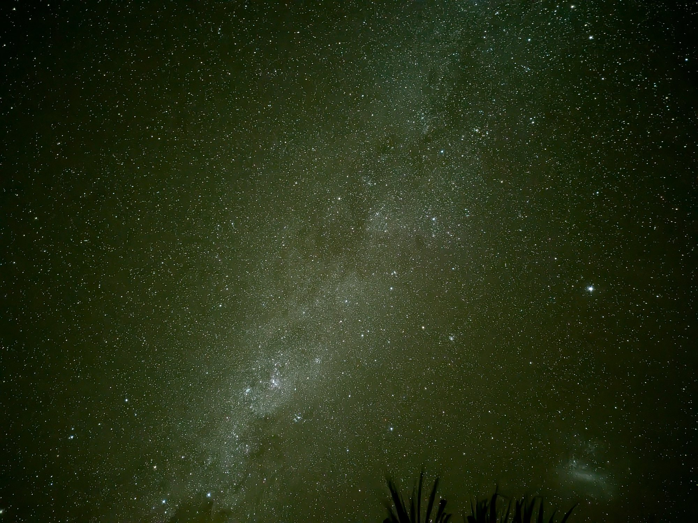
The return point
Minnie Water was worth it
Minnie Water was really good, and it is the place I plan to return to first on the next southbound run. The photographs show coastal vegetation, a clouded horizon and a night sky. The broader setting is Yuraygir National Park, which protects a long stretch of NSW coastline and includes Minnie Water among its coastal hideaways.4
At the campsite at Minnie Water, this massive goanna was just wandering through. I reckon it was around 2.5 metres long.
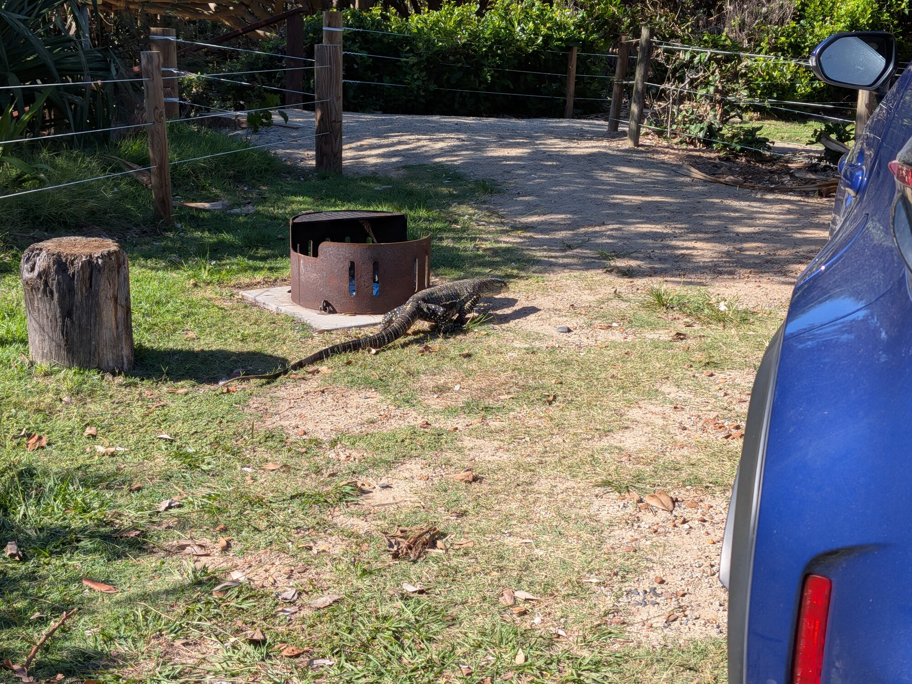
Woody Head, then the way north
Woody Head was very family-oriented, and that was a positive. Its calm-water shoreline followed Minnie Water in the photo sequence. Woody Head campground is within Bundjalung National Park, where it is listed among the park’s camping options.3
Yamba came later as a photographed lighthouse and headland stop. New Italy was a short highway pause. The return then reached Cape Byron, where the lighthouse sits at Australia’s most easterly point in Walgun Cape Byron State Conservation Area.2
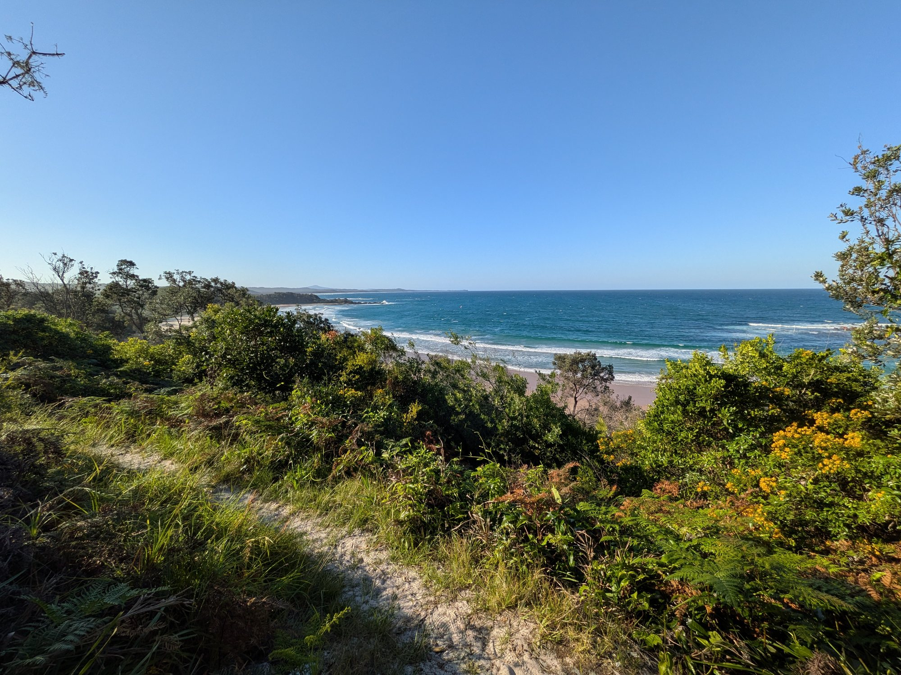
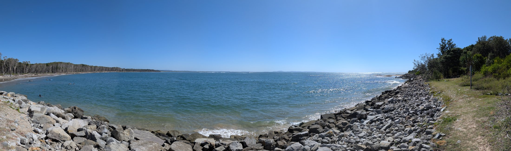
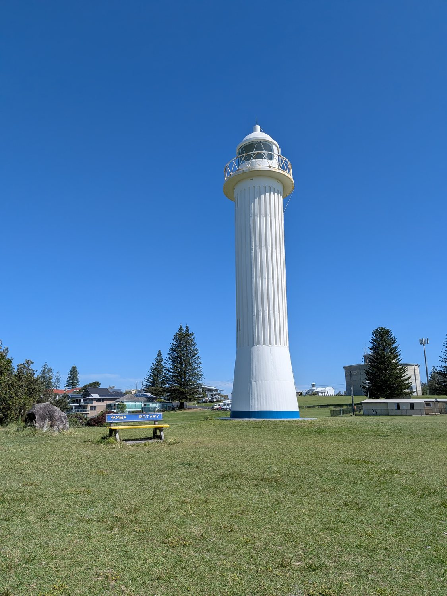
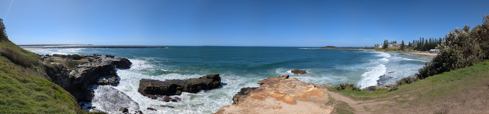
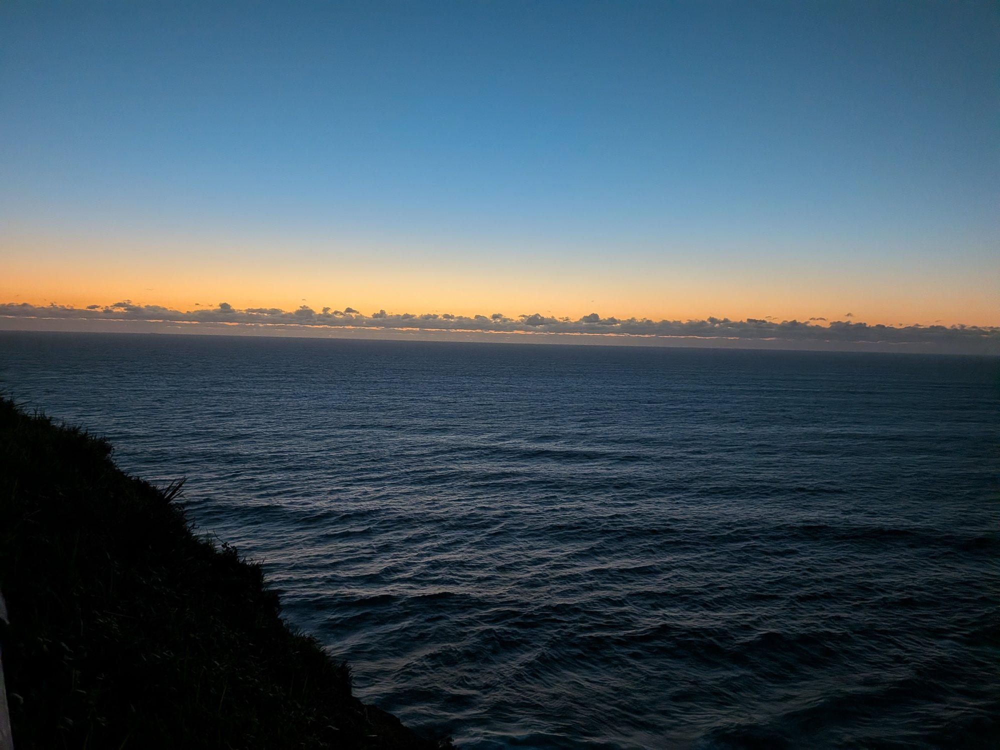
Trip 2 — completed
Red Rock, then Dorrigo
The second trip ran the route that the journal had planned: Minnie Water → Red Rock → Dorrigo → Evans Head. It added the inland leg through the rainforest and came back out at the coast on Sunday morning.
Sources